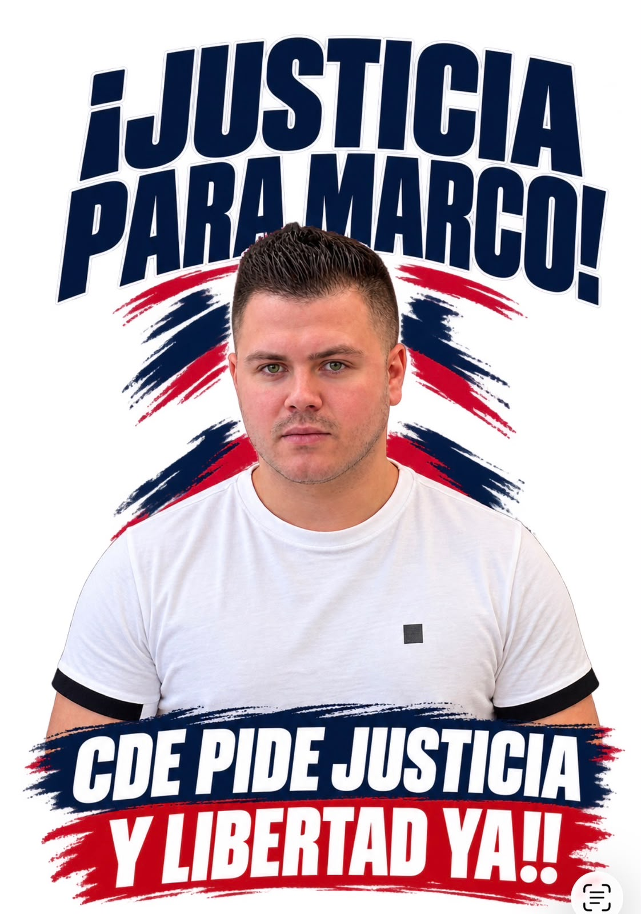
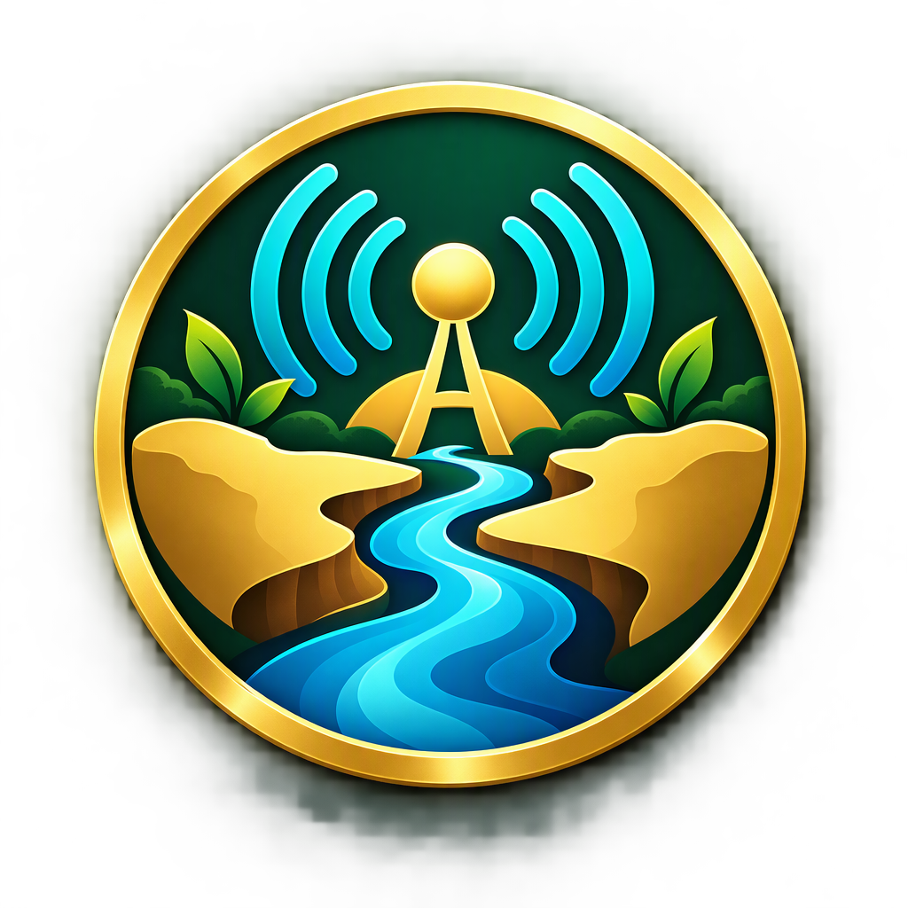
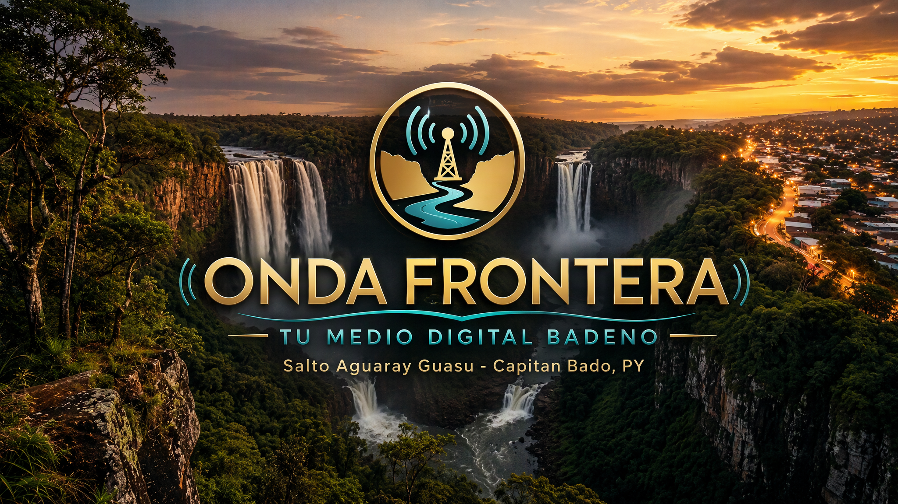
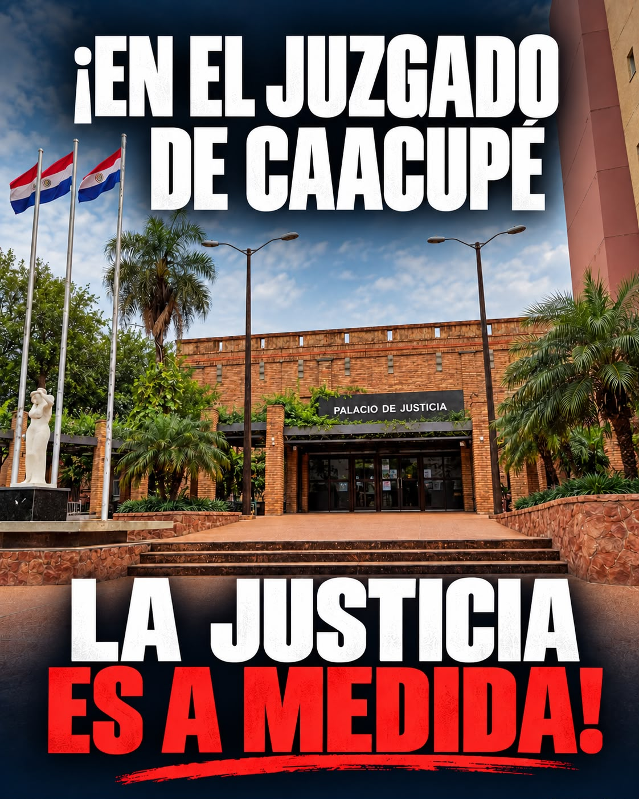

Caso comunitarioMarco Enmanuel GonzálezEl artículo enlazado informa sobre su liberación tras cuatro meses en Emboscada y relata el proceso judicial cuestionado.Leer artículo en La Clave ↗Ver video en YouTube ↗

Onda FronteraTu medio digital de la Triple Frontera. Una señal cercana para acompañarte entre Paraguay, Brasil y Argentina.

Escuchando ahora
Elegí el territorio que querés descubrir. Esta capa queda lista para conectar futuras noticias, programas y agenda local.
Conocé a nuestros auspiciantes oficiales y visitá sus espacios.
Piezas visuales compartidas por la comunidad para informar y acompañar una campaña. Esta galería está separada de los auspiciantes y no representa por sí sola una postura editorial de la emisora.
Ver página de Facebook ↗
